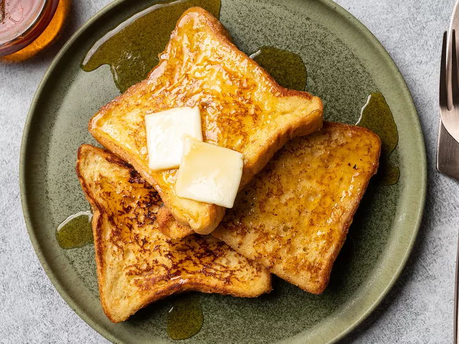

French Toast

Description
The best way to make basic French toast, using only pantry staples.
Ingredients
- 8 (1/2-inch thick) slices white bread
- 6 large eggs
- 4 tablespoons sugar, plus more for sprinkling
- Pinch kosher salt
- Pinch ground cinnamon
- Pinch freshly grated nutmeg
- 1/4 teaspoon vanilla extract
- 2 cups whole milk
- 4 tablespoons unsalted butter for the pan, plus more for serving
- Maple syrup, for serving
Instructions
- Set a wire rack on a rimmed baking sheet in the oven and preheat to 200°F (93°C). If using very fresh, moist bread, arrange slices in a single layer on the rack and cook in oven, turning once, until lightly toasted, about 10 minutes.
- Meanwhile, in a large mixing bowl, whisk together eggs, sugar, salt, cinnamon, nutmeg, and vanilla until thoroughly combined. Add milk and whisk to blend.
- Heat 1 tablespoon butter in a large non-stick or cast iron skillet over medium heat, swirling skillet, until foaming subsides, about 5 minutes. Soak 2 slices of bread in egg bath, turning, until saturated. Add soaked bread to skillet and cook, swirling occasionally, until browned on bottom side, about 3 minutes. Sprinkle top side of bread with sugar, flip, and continue to cook, swirling occasionally, until browned on second side, about 3 minutes longer. Transfer French toast to the rack in the oven in a single layer to keep warm and repeat with remaining slices of bread and egg bath.
- Serve French toast with pats of butter and maple syrup.
Home